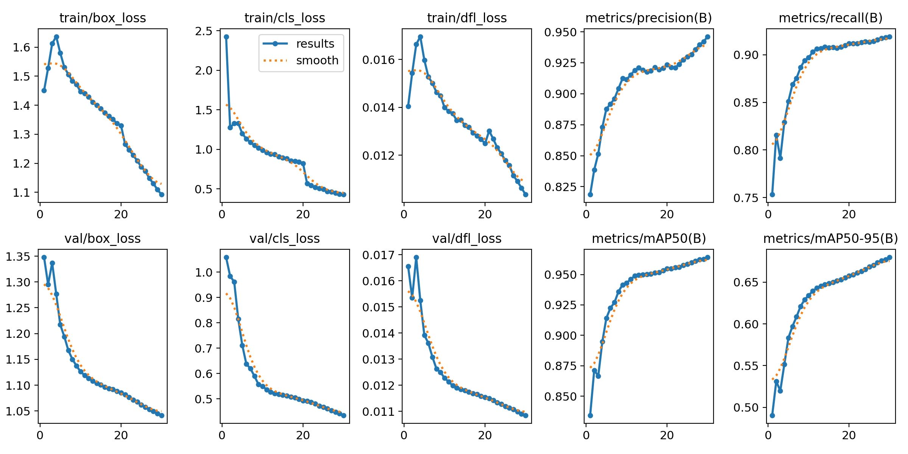
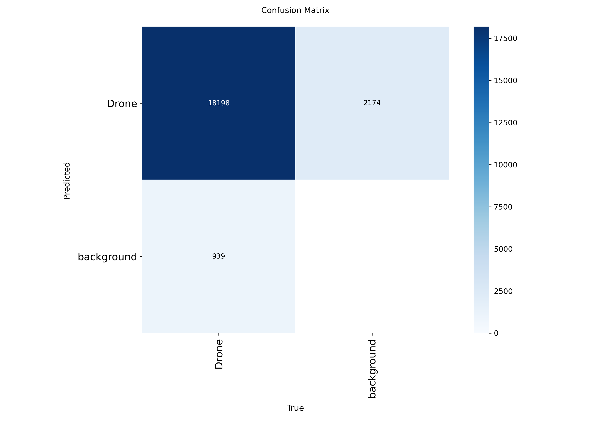
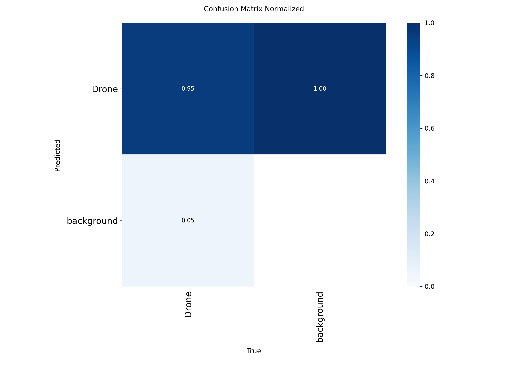
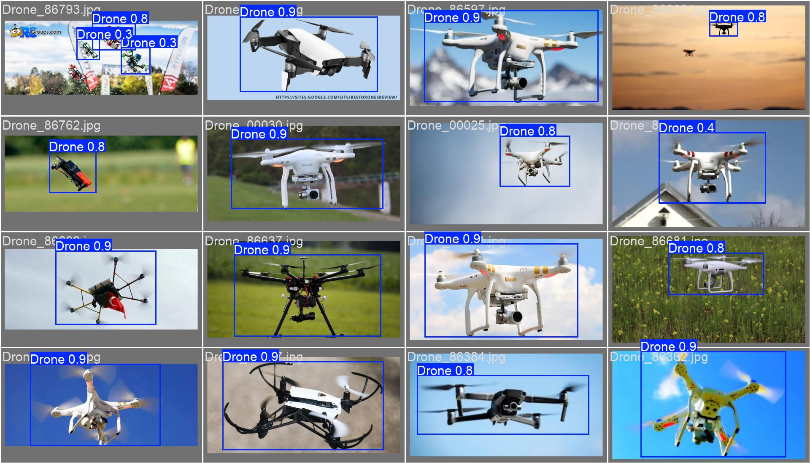

Sistema de Identificación y Rastreo de Aeronaves No Tripuladas (SIRAN)
Reporte generado: 2026-05-26 22:12:28
Distribución de imágenes por split del dataset de entrenamiento.
| Split | Positivas | Negativas | Total | Proporcion_esperada | Porcentaje_real |
|---|---|---|---|---|---|
| train | 4443 | 5207 | 9650 | 70% | 70.0% |
| valid | 1269 | 1486 | 2755 | 20% | 20.0% |
| test | 636 | 748 | 1384 | 10% | 10.0% |
Resultados de la última época de entrenamiento vs. criterios de aceptación.
✓ 4 Cumple— 1 Pendiente| Metrica | Criterio | Resultado | Veredicto | Epoca |
|---|---|---|---|---|
| Precisión | ≥ 0.85 | 0.9462 | ✓ CUMPLE | 30 |
| Recall | ≥ 0.70 | 0.9192 | ✓ CUMPLE | 30 |
| mAP@0.5 | ≥ 0.80 | 0.9642 | ✓ CUMPLE | 30 |
| mAP@0.5:0.95 | — | 0.6798 | — | 30 |
| GLOBAL RNF-02 | Todos ≥ umbral | — | ✓ APROBADO | 30 |
Figuras generadas por Ultralytics durante el entrenamiento.

Fig 4 1 Curvas Perdida

Fig 4 1 Matriz Confusion

Fig 4 1 Matriz Confusion Norm

Fig 4 1 Predicciones Val
Métricas de rendimiento medidas sobre inference_frames de la base de datos.
✓ 3 Cumple— 6 Pendiente| Metrica | Valor | Unidad | Criterio | Veredicto |
|---|---|---|---|---|
| FPS promedio | 52.50 | FPS | ≥ 25 | ✓ CUMPLE |
| FPS mínimo | 0.00 | FPS | — | — |
| FPS máximo | 124.73 | FPS | — | — |
| Latencia promedio | 25.34 | ms | ≤ 100 | ✓ CUMPLE |
| Latencia máxima | 10165979.21 | ms | — | — |
| Latencia P95 | 27.94 | ms | — | — |
| Frames analizados | 1,985,047 | frames | — | — |
| Tasa de detección | 0.70 | % | — | — |
| GLOBAL RNF-01 | — | — | FPS≥25 Y Lat≤100ms | ✓ APROBADO |
Confianza, tasa de detección y FPS agrupados por distancia de vuelo.
Sin datosSin datos — ejecuta el script correspondiente.
Análisis de alertas falsas generadas ante objetos que no son UAV.
Sin datosSin datos — ejecuta el script correspondiente.
Recall y confianza bajo distintas condiciones lumínicas.
Sin datosSin datos — ejecuta el script correspondiente.
TSE, tiempos de readquisición y jitter del sistema pan-tilt-zoom.
— 9 Pendiente| Metrica | Criterio | Resultado | Requisito | Veredicto |
|---|---|---|---|---|
| TSE (Seg. Efectivo) | ≥ 0.8 | — PENDIENTE | RF-10 | — PENDIENTE |
| t_reacq promedio (s) | ≤ 3.0 | — PENDIENTE | RNF-09 | — PENDIENTE |
| t_reacq máximo (s) | — | — PENDIENTE | — | — |
| t_reacq P95 (s) | — | — PENDIENTE | — | — |
| Jitter PTZ (°) | ≤ 2.0 | — PENDIENTE | RNF-08 | — PENDIENTE |
| Pérdidas totales | — | — PENDIENTE | — | — |
| Readquisiciones exitosas | — | — PENDIENTE | — | — |
| Pérdidas sin recuperación | — | — PENDIENTE | — | — |
| Tasa readquisición | — | — PENDIENTE | — | — |
| ID | Descripcion | Criterio | Resultado | Veredicto |
|---|---|---|---|---|
| RF-01 | Detección de UAV en tiempo real | FPS ≥ 25 y Latencia ≤ 100 ms | rendimiento_live | ✓ APROBADO |
| RF-02 | Confirmación de alerta (umbral de confianza) | Confianza promedio ≥ 0.60 | resultados_por_distancia | — Pendiente de medición |
| RF-03 | Detección a distintas distancias (10–100 m) | Conf. promedio ≥ 0.60 en todas las distancias | resultados_por_distancia | — Pendiente de medición |
| RF-04 | Operación en distintas condiciones de iluminación | Recall ≥ 0.70 en todas las condiciones | comparativa_iluminacion | — Pendiente de medición |
| RF-05 | Generación de alerta visual/sonora al detectar UAV | Funcionalidad verificada manualmente | — | — Verificación manual |
| RF-06 | Registro de eventos de detección en base de datos | detection_events se puebla durante operación | — | — Verificación manual |
| RF-07 | Visualización de video en tiempo real | Stream MJPEG accesible en navegador | — | — Verificación manual |
| RF-08 | Panel de administración y configuración | Acceso autenticado y funcional | — | — Verificación manual |
| RF-09 | Exportación de datos e historial de detecciones | Descarga CSV/JSON disponible en la interfaz | — | — Verificación manual |
| RF-10 | Seguimiento automático PTZ (pan-tilt-zoom) | TSE ≥ 0.80 | metricas_ptz | — PENDIENTE |
| RF-11 | Control manual de cámara PTZ | Movimiento responde a comandos del operador | — | — Verificación manual |
| ID | Descripcion | Criterio | Resultado | Veredicto |
|---|---|---|---|---|
| RNF-01 | Procesamiento en tiempo real | FPS ≥ 25 y Latencia ≤ 100 ms | rendimiento_live | ✓ APROBADO |
| RNF-02 | Precisión del modelo de detección | Precision ≥ 0.85, Recall ≥ 0.70, mAP50 ≥ 0.80 | metricas_modelo | ✓ APROBADO |
| RNF-03 | Tasa de falsos positivos aceptable | FP rate ≤ 5 % | analisis_falsos_positivos | — Pendiente de medición |
| RNF-04 | Robustez ante condiciones de iluminación | Recall ≥ 0.70 en todas las condiciones | comparativa_iluminacion | — Pendiente de medición |
| RNF-05 | Alta disponibilidad del sistema | Operación continua sin reinicio manual | — | — Verificación manual |
| RNF-06 | Tiempo de arranque rápido | Sistema listo en < 60 s desde inicio | — | — Verificación manual |
| RNF-07 | Compatibilidad con cámaras IP y PTZ estándar (ONVIF/RTSP) | Conexión exitosa con cámara del proyecto | — | — Verificación manual |
| RNF-08 | Estabilidad del seguimiento PTZ (jitter) | Jitter ≤ 2.0 ° | metricas_ptz | — PENDIENTE |
| RNF-09 | Tiempo de readquisición PTZ | t_reacq promedio ≤ 3.0 s | metricas_ptz | — PENDIENTE |
| RNF-10 | Seguridad de acceso al panel | Autenticación requerida — acceso bloqueado sin login | — | — Verificación manual |